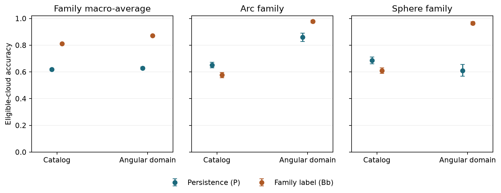

26 November 2026 · Libor “Burny” Burian
The strict primary-dataset conjunction fails on weekdays, months and modular residues. The amended primary steering experiment remains untested. The accuracy comparison depends on how the source labels near-complete angular domains.

| Cohort | Target | Persistence (P) | Family label (Bb) | Paired P − Bb (95% CI) |
|---|---|---|---|---|
| macro | catalog | 0.618 | 0.812 | -0.194 [-0.203, -0.185] |
| macro | angular | 0.628 | 0.870 | -0.242 [-0.252, -0.232] |
| arc | catalog | 0.651 | 0.576 | +0.075 [+0.055, +0.094] |
| arc | angular | 0.859 | 0.978 | -0.120 [-0.153, -0.086] |
| sphere | catalog | 0.687 | 0.609 | +0.077 [+0.046, +0.107] |
| sphere | angular | 0.610 | 0.965 | -0.355 [-0.402, -0.302] |
Intervals use paired resampling of generator chunks. The angular-domain sensitivity preserves all predictions and catalog eligibility.
The methods agree on components, loops and voids for 27/44 datasets. Among eligible contractible clouds flagged by distance to the sampled shape, P detected a loop or void in 350/4144. The intervals below use generator chunks.
| cohort | comparison | Detections | Clouds | Estimate | 95% lower | 95% upper |
|---|---|---|---|---|---|---|
| catalog | flagged | 350 | 4144 | 0.084 | 0.071 | 0.098 |
| catalog | unflagged | 672 | 15086 | 0.045 | 0.038 | 0.051 |
| catalog | flagged minus unflagged | — | — | 0.040 | 0.030 | 0.051 |
| six families | flagged | 230 | 3547 | 0.065 | 0.053 | 0.079 |
| six families | unflagged | 401 | 12880 | 0.031 | 0.026 | 0.037 |
| six families | flagged minus unflagged | — | — | 0.034 | 0.023 | 0.045 |
Full-vector agreement by dataset · Every registered condition · Cycle certificates · Claim ledger